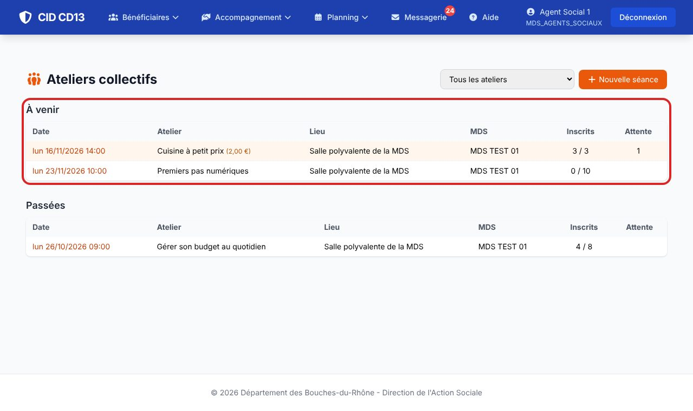
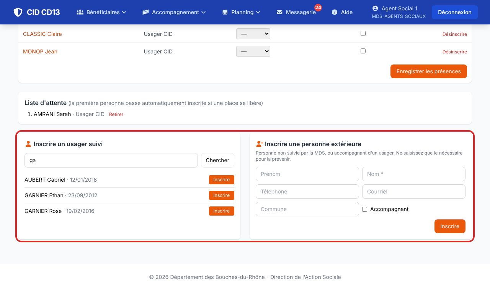
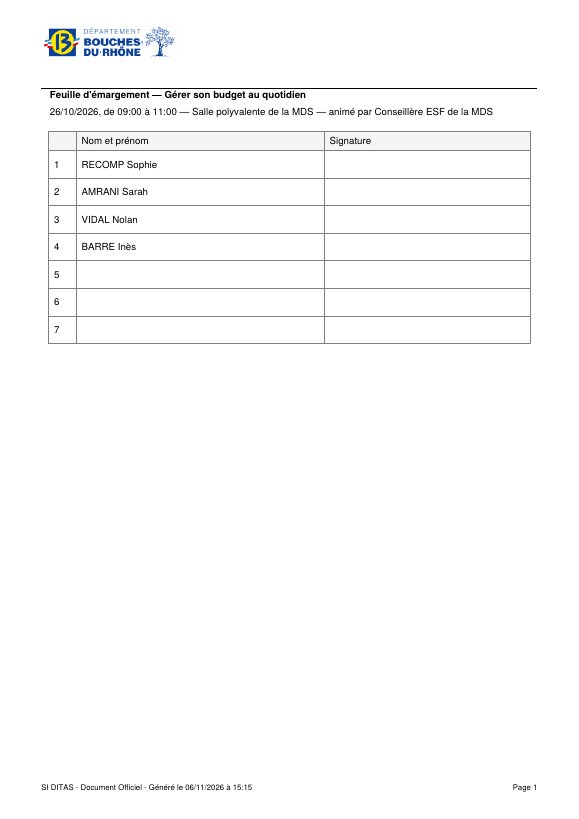
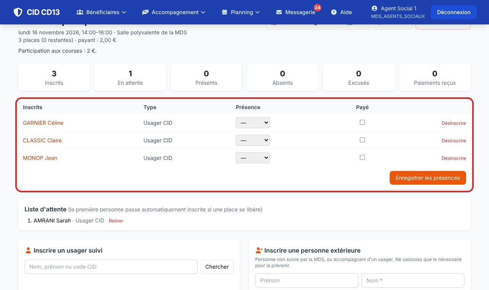

Avant de commencer
- Les ateliers (thèmes) sont créés par un administrateur : Admin → Planning → Ateliers, pour une MDS ou pour tout le Département.
1Voir les séances et en créer une

- Menu Planning → Ateliers collectifs : les séances à venir et passées de votre MDS, avec les inscrits et la liste d'attente.
- Nouvelle séance : atelier, date, horaires, lieu, animateur, partenaire, places (vide = sans limite), condition d'âge, gratuit ou payant.
2Inscrire

- Usager suivi : cherchez-le par son nom ou son code, puis Inscrire. Si l'âge ne correspond pas, CID prévient et propose Inscrire quand même.
- Personne extérieure ou accompagnant : prénom et nom, et seulement de quoi la prévenir.
- Séance complète : la personne part en liste d'attente.
Quand un inscrit se désinscrit, la première personne de la liste d'attente passe inscrite automatiquement. Pensez à la prévenir.
3Le jour de la séance


- Feuille d'émargement : le PDF des inscrits, avec 3 lignes libres. CSV pour un tableur.
- Après la séance, notez la présence de chacun (présent, absent, excusé) et, si c'est payant, le paiement, puis Enregistrer les présences.
Bon à savoir
- La participation apparaît sur la fiche de l'usager (encart « Ateliers collectifs ») et dans son journal.
- Une séance annulée n'accepte plus d'inscription ; elle peut être rétablie.
Et ensuite ?
Cliquez sur une image pour l'agrandir. Le cadre rouge montre où cliquer ou quoi remplir. Toutes les données affichées sont fictives.